geom_col_fade() and geom_bar_fade() draw bar charts like
ggplot2::geom_col() / ggplot2::geom_bar() but with options to
add an alpha gradient that fades from opaque at the peak of
each bar to transparent at its baseline; and rounded corners
are supported via grid::roundrectGrob(), controlled by the
radius argument.
Usage
geom_col_fade(
mapping = NULL,
data = NULL,
stat = "identity",
position = "stack",
...,
alpha_fade_to = 0,
alpha_scope = "bar",
orientation = NA,
radius = grid::unit(0, "pt"),
lineend = "butt",
linejoin = "mitre",
na.rm = FALSE,
show.legend = NA,
inherit.aes = TRUE
)
geom_bar_fade(
mapping = NULL,
data = NULL,
stat = "count",
position = "stack",
...,
alpha_fade_to = 0,
alpha_scope = "bar",
orientation = NA,
radius = grid::unit(0, "pt"),
lineend = "butt",
linejoin = "mitre",
na.rm = FALSE,
show.legend = NA,
inherit.aes = TRUE
)Arguments
- mapping
Set of aesthetic mappings created by
aes(). If specified andinherit.aes = TRUE(the default), it is combined with the default mapping at the top level of the plot. You must supplymappingif there is no plot mapping.- data
The data to be displayed in this layer. There are three options:
If
NULL, the default, the data is inherited from the plot data as specified in the call toggplot().A
data.frame, or other object, will override the plot data. All objects will be fortified to produce a data frame. Seefortify()for which variables will be created.A
functionwill be called with a single argument, the plot data. The return value must be adata.frame, and will be used as the layer data. Afunctioncan be created from aformula(e.g.~ head(.x, 10)).- stat
The statistical transformation to use on the data for this layer, as a string.
geom_col_fade()uses"identity"(no transform),geom_bar_fade()uses"count", andgeom_histogram_fade()uses"bin".- position
A position adjustment to use on the data for this layer. This can be used in various ways, including to prevent overplotting and improving the display. The
positionargument accepts the following:The result of calling a position function, such as
position_jitter(). This method allows for passing extra arguments to the position.A string naming the position adjustment. To give the position as a string, strip the function name of the
position_prefix. For example, to useposition_jitter(), give the position as"jitter".For more information and other ways to specify the position, see the layer position documentation.
- ...
Other arguments passed on to
layer()'sparamsargument. These arguments broadly fall into one of 4 categories below. Notably, further arguments to thepositionargument, or aesthetics that are required can not be passed through.... Unknown arguments that are not part of the 4 categories below are ignored.Static aesthetics that are not mapped to a scale, but are at a fixed value and apply to the layer as a whole. For example,
colour = "red"orlinewidth = 3. The geom's documentation has an Aesthetics section that lists the available options. The 'required' aesthetics cannot be passed on to theparams. Please note that while passing unmapped aesthetics as vectors is technically possible, the order and required length is not guaranteed to be parallel to the input data.When constructing a layer using a
stat_*()function, the...argument can be used to pass on parameters to thegeompart of the layer. An example of this isstat_density(geom = "area", outline.type = "both"). The geom's documentation lists which parameters it can accept.Inversely, when constructing a layer using a
geom_*()function, the...argument can be used to pass on parameters to thestatpart of the layer. An example of this isgeom_area(stat = "density", adjust = 0.5). The stat's documentation lists which parameters it can accept.The
key_glyphargument oflayer()may also be passed on through.... This can be one of the functions described as key glyphs, to change the display of the layer in the legend.
- alpha_fade_to
A single finite number between 0 and 1. The alpha value at the baseline of each bar. Defaults to
0(fully transparent).- alpha_scope
How to choose the per-bar reference height that the gradient normalises against. One of:
"bar"(default): each bar uses its own height – every peak hits full opacity."global": every bar normalises to the tallest bar in the entire layer, including across facet panels. The single tallest bar reaches full opacity; all others fade in proportion."x"/"y": every bar normalises to the tallest bar at the same discrete x (or y) position. Useful for highlighting the leader within a stack or dodge cluster."x"is for vertical bars;"y"is for horizontal bars (coord_flip()/orientation = "y"). Mismatched orientation aborts with a hint."group": every bar normalises to the tallest bar in its ggplot2 group (data$group– the interaction of all discrete aesthetics). Most useful with explicitaes(group = ...); with the typicalaes(x = factor, fill = factor)layout it degenerates to"bar"because every (x, fill) pair is its own group."fill"/"colour": every bar normalises to the tallest bar with the same fill (or colour). Bars sharing a fill share an alpha range across x and across facet panels.
- orientation
The orientation of the layer. The default (
NA) automatically determines the orientation from the aesthetic mapping. In the rare event that this fails it can be given explicitly by settingorientationto either"x"or"y". See the Orientation section for more detail.- radius
Corner radius passed to
grid::roundrectGrob(). Agrid::unit()object (e.g.unit(4, "pt")); a bare number is interpreted as points. Defaults tounit(0, "pt")(matchinggeom_bar()/geom_col()).- lineend
Line end style (round, butt, square).
- linejoin
Line join style (round, mitre, bevel).
- na.rm
If
FALSE, the default, missing values are removed with a warning. IfTRUE, missing values are silently removed.- show.legend
logical. Should this layer be included in the legends?
NA, the default, includes if any aesthetics are mapped.FALSEnever includes, andTRUEalways includes. It can also be a named logical vector to finely select the aesthetics to display. To include legend keys for all levels, even when no data exists, useTRUE. IfNA, all levels are shown in legend, but unobserved levels are omitted.- inherit.aes
If
FALSE, overrides the default aesthetics, rather than combining with them. This is most useful for helper functions that define both data and aesthetics and shouldn't inherit behaviour from the default plot specification, e.g.annotation_borders().
Value
A ggplot2::layer() object that can be added to a ggplot2::ggplot().
Orientation
This geom treats each axis differently and, thus, can thus have two orientations. Often the orientation is easy to deduce from a combination of the given mappings and the types of positional scales in use. Thus, ggplot2 will by default try to guess which orientation the layer should have. Under rare circumstances, the orientation is ambiguous and guessing may fail. In that case the orientation can be specified directly using the orientation parameter, which can be either "x" or "y". The value gives the axis that the geom should run along, "x" being the default orientation you would expect for the geom.
alpha_scope = "global" under faceting
alpha_scope = "global" ties opacity to absolute height across the whole
layer, so two ridges / areas / bars of equal height render at equal
alpha regardless of which panel they're in. This is meaningful only when
panels share a common y scale. Under
facet_wrap(scales = "free_y") (or facet_grid(rows = ..., scales = "free"))
each panel rescales y independently, so the visual height of a shape no
longer reflects its data height; the alpha encoding then conflicts with
what the eye reads from the panel size. For comparable alpha across
free-y panels you have two options: stick to the default scales = "fixed",
or accept that under free scales alpha_scope = "group" is the more
honest choice (each shape independently uses its own alpha range).
Legend key under coord_flip
The legend key glyph always shows the canonical (data-axis) fade
direction – vertical for the default orientation, horizontal under
orientation = "y". Under ggplot2::coord_flip() the rendered geom
rotates correctly but the legend key does not: ggplot2's legend
builder is coord-independent by design (draw_key has no access to
the coord). For a legend key that matches a horizontal layout, prefer
aes(y = ...) with auto-detected orientation = "y" over
aes(x = ...) + coord_flip().
References
Murrell, P. (2022). "Vectorised Pattern Fills in R Graphics." Technical Report 2022-01, Department of Statistics, The University of Auckland. Version 1. https://www.stat.auckland.ac.nz/~paul/Reports/GraphicsEngine/vecpat/vecpat.html
See also
ggplot2::geom_bar() and ggplot2::geom_col() for fully
opaque bar charts,
geom_histogram_fade() for the histogram chart equivalent.
Aesthetics
geom_col_fade() understands the following aesthetics. Required aesthetics are displayed in bold and defaults are displayed for optional aesthetics:
| • | x | |
| • | y | |
| • | alpha | → NA |
| • | colour | → via theme() |
| • | fill | → via theme() |
| • | group | → inferred |
| • | linetype | → via theme() |
| • | linewidth | → via theme() |
| • | width | → 0.9 |
Learn more about setting these aesthetics in vignette("ggplot2-specs").
Examples
library(ggplot2)
df <- data.frame(
x = c("A", "B", "C", "D", "E"),
y = c(3, 4, -2, -0.5, 1)
)
ggplot(df, aes(x, y)) +
geom_col_fade() +
theme_minimal()
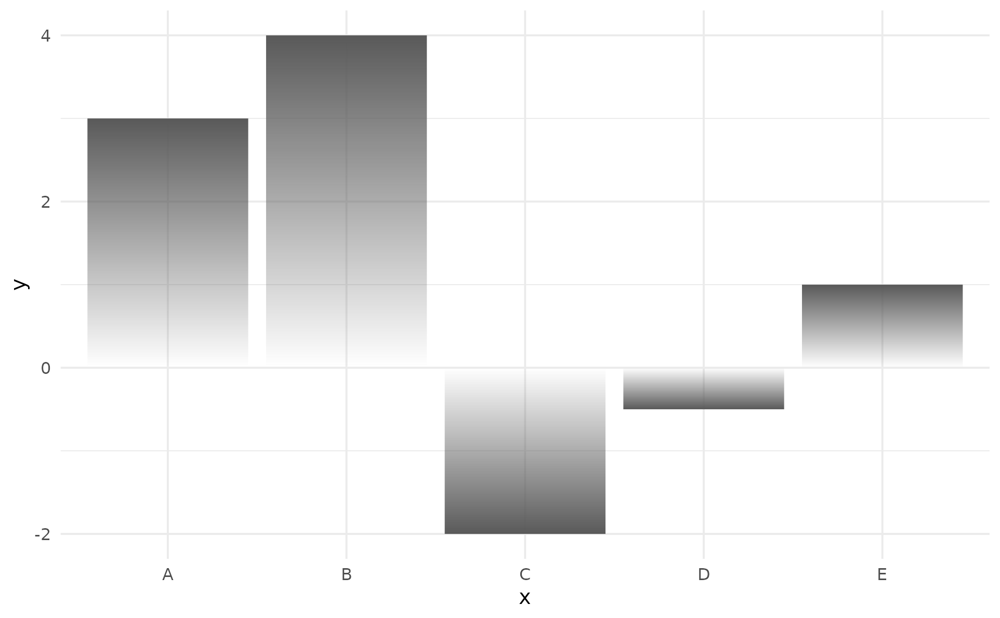
# Rounded bar charts are supported too
ggplot(df, aes(x, y)) +
geom_col_fade(radius = unit(10, "pt")) +
theme_minimal()
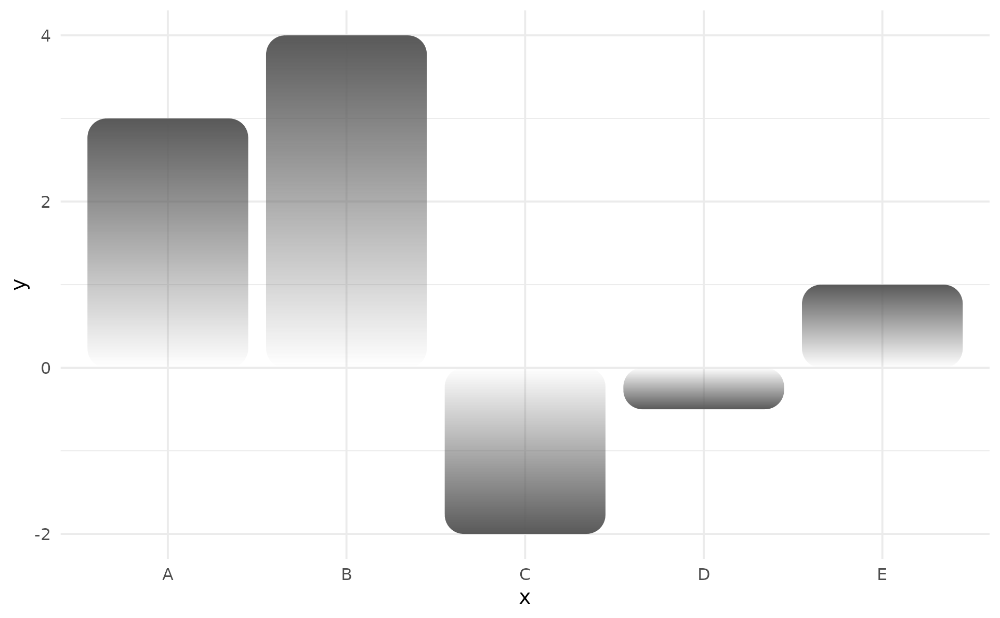
# Start at 90% opacity and keep some opacity at the baseline
ggplot(df, aes(x, y)) +
geom_col_fade(
alpha = 0.9,
alpha_fade_to = 0.1
) +
theme_minimal()
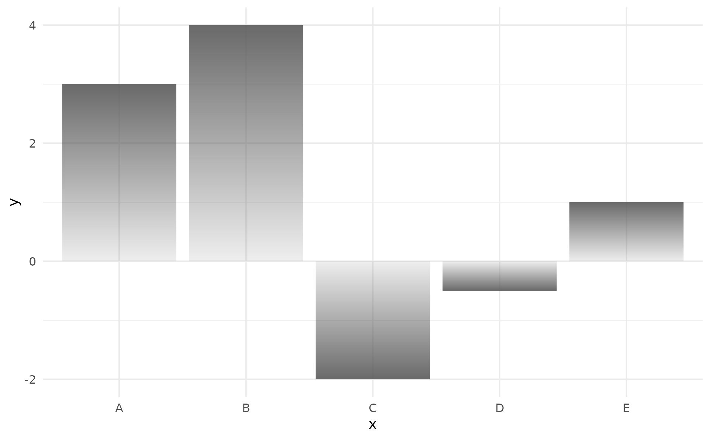
# Horizontal bars are supported
ggplot(df, aes(y, x)) +
geom_col_fade() +
theme_minimal()
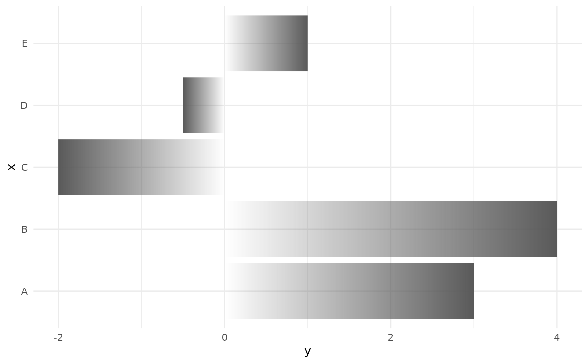
# Multiple groups with different alpha scopes
p <- ggplot(diamonds, aes(color, fill = cut)) +
scale_fill_viridis_d(guide = "none") +
labs(x = NULL, y = NULL) +
theme_minimal()
# By default each bar has its own alpha scope
p + geom_bar_fade()
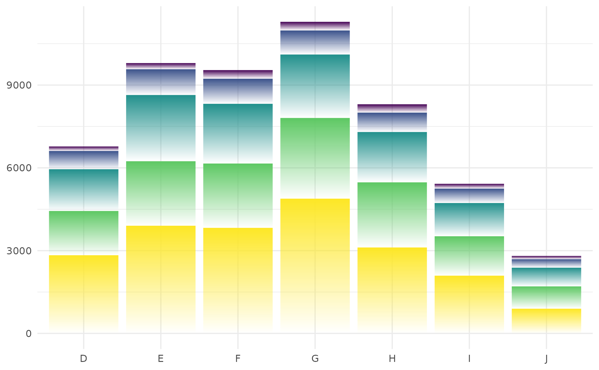
# With alpha_scope = "x", bars at same x aesthetic share same alpha scope
p + geom_bar_fade(alpha_scope = "x")
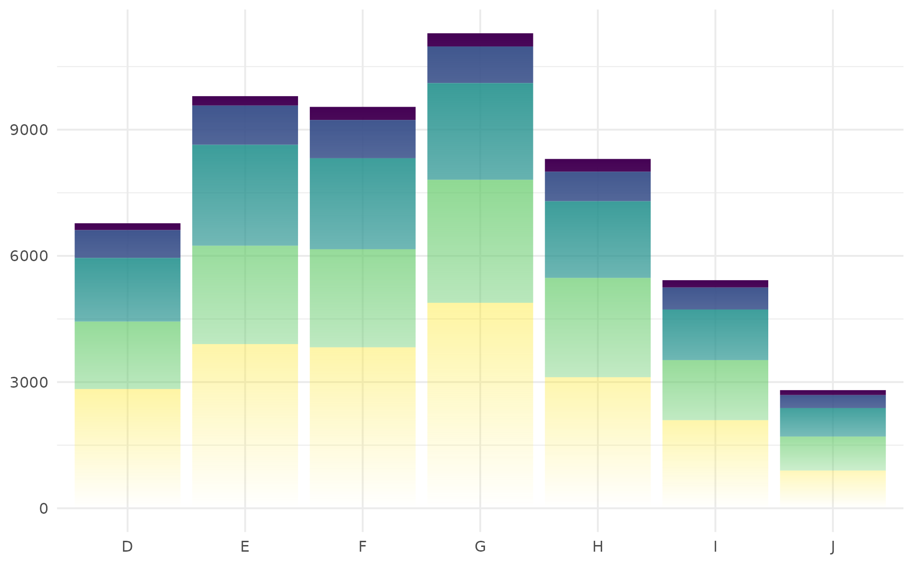
# With alpha_scope = "fill", alpha is defined by what is mapped to the fill aesthetic
p + geom_bar_fade(alpha_scope = "fill")
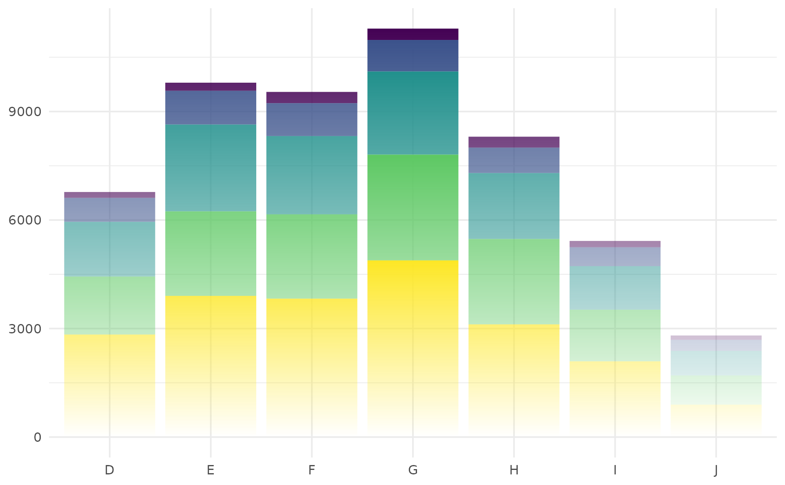
# With alpha_scope = "global", the maximum absolute
# value across the whole dataset is fully opaque
p + geom_bar_fade(alpha_scope = "global")
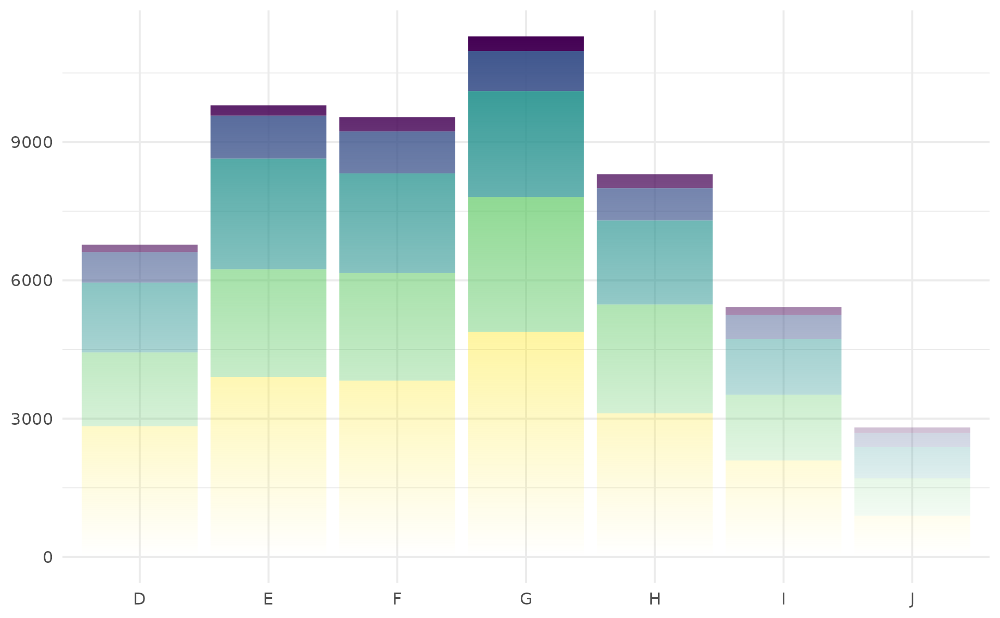
# same examples for position dodge with varying alpha scope:
p + geom_bar_fade(alpha_scope = "bar", position = "dodge")
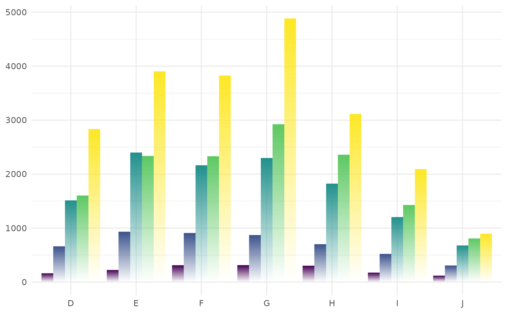
p + geom_bar_fade(alpha_scope = "x", position = "dodge")
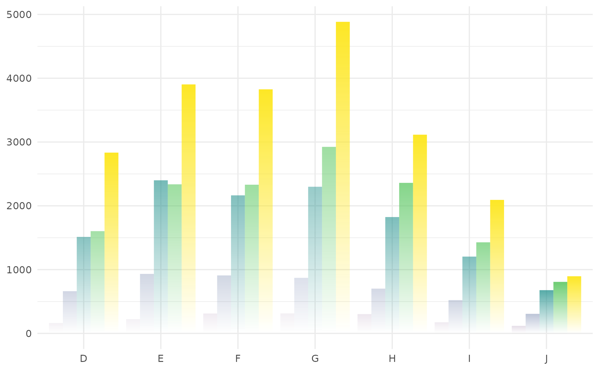
p + geom_bar_fade(alpha_scope = "fill", position = "dodge")
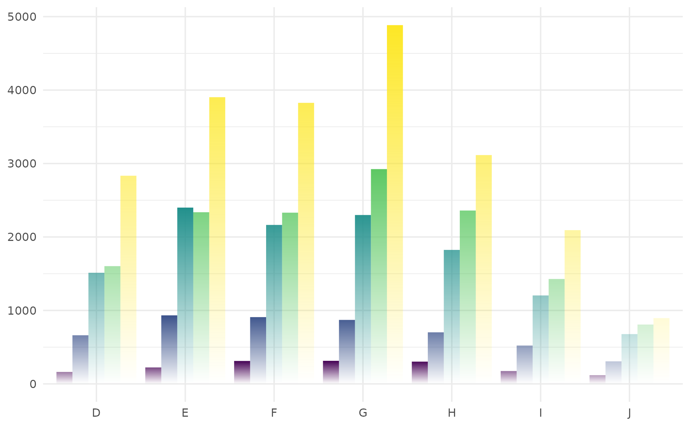
p + geom_bar_fade(alpha_scope = "global", position = "dodge")
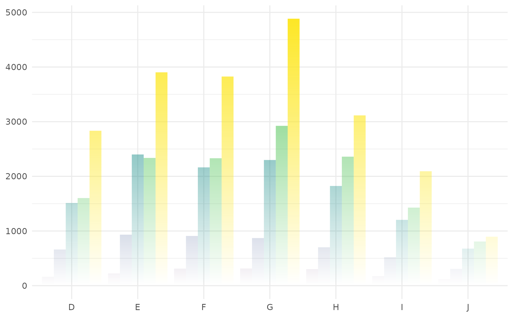
# Polar coordinates are supported too, if you need it
ggplot(diamonds, aes(x = factor(1), fill = cut)) +
geom_bar_fade(width = 1) +
coord_polar(theta = "y") +
theme_void()
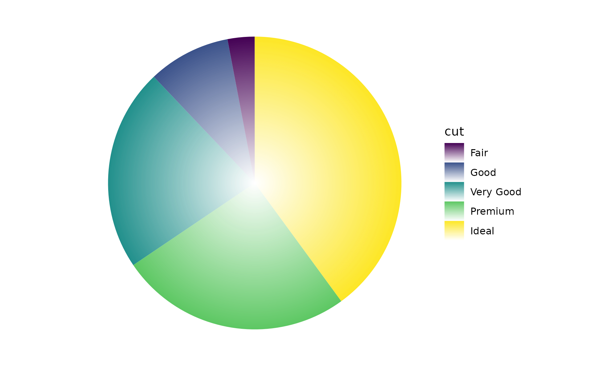